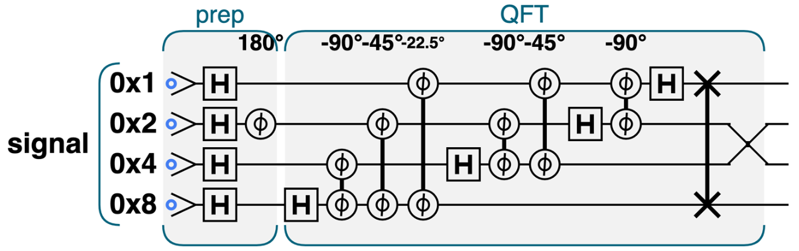
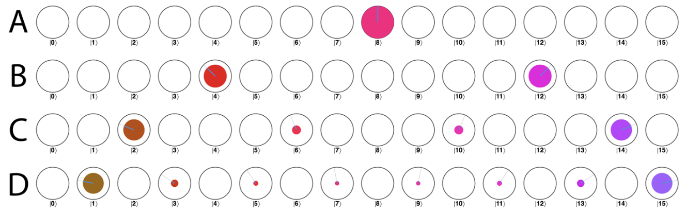

Exam Review · ปลายภาค · หน้าพิเศษ
2 อย่างที่ต้องมีในหัวตอนเดินเข้าห้อง
n = จำนวน qubit · m = จำนวนค่าที่ mark (จำนวนคำตอบ) · ⌊ ⌋ = ปัดลง · π/4 ≈ 0.785
| โจทย์ | แทนสูตร | ได้ |
|---|---|---|
| n = 4, m = 1 | 0.785 × √16 = 3.14 | 3 รอบ (96.1%) |
| n = 4, m = 2 | 0.785 × √8 = 2.22 | 2 รอบ |
| n = 3, m = 1 | 0.785 × √8 = 2.22 | 2 รอบ |
| n = 2, m = 1 | 0.785 × √4 = 1.57 | 1 รอบ (100% พอดี) |
จำง่าย: m อยู่ใต้รูท · mark มากขึ้น → ใช้รอบน้อยลง · รอบโตตาม √N ไม่ใช่ N · วนเกินกว่านี้ความน่าจะเป็นจะลดลง (เลยยอดคลื่นลูกแรกไปแล้ว)
สัญญาณจริงเป็นกระจก — PHASE 180° = แค่ติดเครื่องหมายลบ (บวก/ลบ ไม่มีเฟสอื่น) = สัญญาณจริง → หลัง QFT peak มาเป็นคู่กระจก k กับ 16 − k เสมอ (4 ↔ 12 · 2 ↔ 14 · 6 ↔ 10)

โค้ดคือ signal.hadamard(); signal.phase(180, wave_period); signal.QFT();
— เปลี่ยน wave_period เป็น 1 / 2 / 4 / 8 ก็ได้สัญญาณ A / B / C / D
วิธีหั่นครึ่ง: เอา 16 ช่อง (|0⟩–|15⟩) มาหั่นเป็น wave_period ก้อน แล้วจิ้มตรงกลางของแต่ละก้อน = ตำแหน่ง peak
| wave_period | หั่นยังไง | peak หลัง QFT |
|---|---|---|
| 1 (A) | หั่นครึ่งครั้งเดียว | 8 (100%) |
| 2 (B) | หั่นครึ่งสองก้อน | 4, 12 (อย่างละ 50%) |
| 4 (C) | หั่นครึ่งสี่ก้อน | 2, 6, 10, 14 (2, 14 ใหญ่ ≈ 43% · 6, 10 เล็ก ≈ 7%) |
| 8 (D) | แปดก้อน (ก้อนละ 2) | เลขคี่ทุกตัว 1, 3, …, 15 (1, 15 ใหญ่สุด ≈ 41%) |

ระวัง: wave_period คือ bitmask ของสายที่โดน 180° ไม่ใช่ความถี่ตรงๆ — ยิ่งเลขใหญ่ ยิ่งสลับ +/− ช้า ความถี่หลักจริงคือ 8 / wave_period (1 → 8 · 2 → 4 · 4 → 2) ซึ่งก็คือ peak ตัวแรกในตาราง · peak ที่เหลือเป็นฮาร์มอนิกคี่ (3 เท่า, 5 เท่า, …) ที่สะท้อนกระจกกลับมา